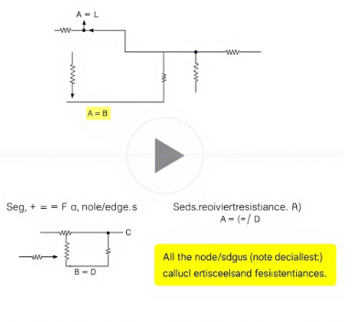

Problem 1: Equivalent Resistance Using Graph Theory
Solution Option 1: Algorithm Description
Algorithm Overview
The algorithm for calculating equivalent resistance using graph theory involves iteratively simplifying the circuit graph by identifying and reducing series and parallel connections until only a single equivalent resistance remains.
Key Steps:
- Graph Representation:
-
Represent the circuit as an undirected weighted graph \(G = (V, E)\) where:
- \(V\) = set of nodes (connection points/junctions)
- \(E\) = set of edges (resistors) with weight \(R_i\) (resistance value)
-
Series Reduction:
- Identify nodes with degree 2 (connected to exactly two edges)
- For such nodes, combine the two resistors in series: \(\(R_{eq} = R_1 + R_2\)\)
-
Remove the intermediate node and replace with a single edge
-
Parallel Reduction:
- Identify edges that form parallel connections (multiple edges between same pair of nodes)
- Combine parallel resistors using: \(\(\frac{1}{R_{eq}} = \sum_{i=1}^n \frac{1}{R_i}\)\)
-
Replace parallel edges with a single equivalent edge
-
Iterative Simplification:
- Repeat series and parallel reductions until:
- Only two nodes remain (source and destination), or
- No more reductions are possible (complex circuit requiring advanced methods)
Pseudocode
# Parallel reduction
for u, v in graph.edges:
parallel_edges = get_all_edges_between(u, v)
if count(parallel_edges) > 1:
inverse_sum = sum(1/R for R in parallel_edges)
Req = 1 / inverse_sum
graph.remove_all_edges_between(u, v)
graph.add_edge(u, v, Req)
if graph has only source and target: return get_edge_resistance(source, target) else: return "Circuit too complex for simple reduction"
Solution Option 2: Python Implementation

```python import networkx as nx
def equivalent_resistance(graph, source, target): """Calculate equivalent resistance between source and target nodes.""" G = graph.copy()
while True:
# Check if we're done
if G.number_of_nodes() == 2 and G.number_of_edges() == 1:
return next(G.edges(data=True))[2]['weight']
# Series reduction
reduced = False
for node in list(G.nodes()):
if node not in [source, target] and G.degree(node) == 2:
neighbors = list(G.neighbors(node))
R1 = G[node][neighbors[0]]['weight']
R2 = G[node][neighbors[1]]['weight']
Req = R1 + R2
G.remove_node(node)
G.add_edge(neighbors[0], neighbors[1], weight=Req)
reduced = True
break
if reduced:
continue
# Parallel reduction
for u, v in list(G.edges()):
parallel_edges = list(G.get_edge_data(u, v).values())
if len(parallel_edges) > 1:
inverse_sum = sum(1/e['weight'] for e in parallel_edges)
Req = 1 / inverse_sum
G.remove_edges_between(u, v)
G.add_edge(u, v, weight=Req)
reduced = True
break
if not reduced:
break
if G.number_of_nodes() == 2 and G.number_of_edges() == 1:
return next(G.edges(data=True))[2]['weight']
else:
raise ValueError("Circuit too complex for simple reduction")
Example usage
if name == "main": # Example 1: Simple series circuit G1 = nx.Graph() G1.add_edge('A', 'B', weight=2) G1.add_edge('B', 'C', weight=3) print("Example 1 (2+3 series):", equivalent_resistance(G1, 'A', 'C'))
# Example 2: Simple parallel circuit
G2 = nx.Graph()
G2.add_edge('A', 'B', weight=4)
G2.add_edge('A', 'B', weight=4)
print("Example 2 (4||4 parallel):", equivalent_resistance(G2, 'A', 'B'))
# Example 3: Combined series-parallel
G3 = nx.Graph()
G3.add_edge('A', 'B', weight=1)
G3.add_edge('B', 'C', weight=2)
G3.add_edge('B', 'C', weight=2)
G3.add_edge('C', 'D', weight=1)
print("Example 3 (Combined):", equivalent_resistance(G3, 'A', 'D'))